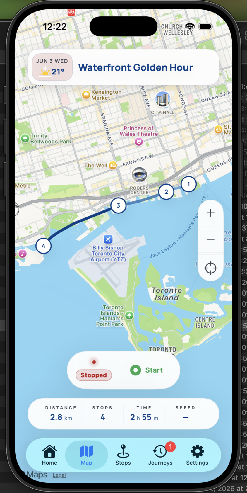
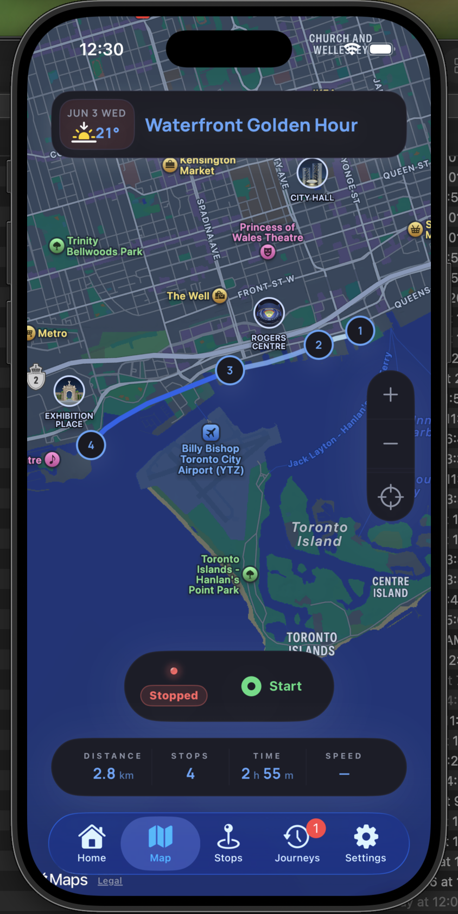

Help Center
Understand each part of a journey.
Use these guides to read your route, review captured stops, browse photos, understand insights, and refine journal memories.


Topics
Help topics
Map
Follow the route line, stop markers, and tracking state.
StopsReview captured places, timing, weather, mood, notes, and photos.
PhotosBrowse the journey photo set and filter by stop.
InsightsRead distance, duration, mood, weather, and stop summaries.
JournalEdit moods and notes that make each stop easier to remember.